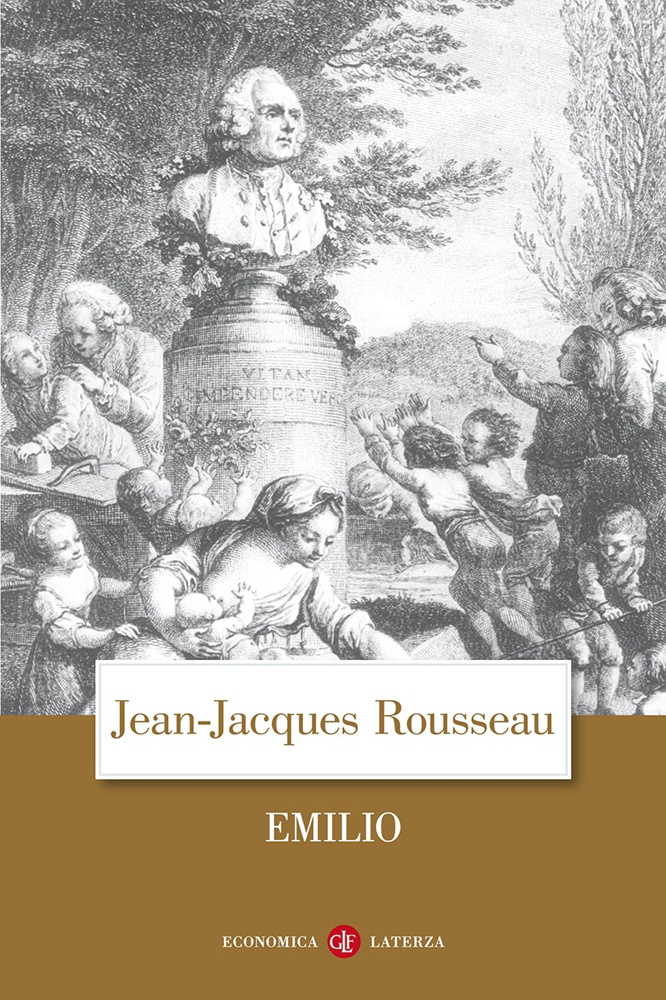
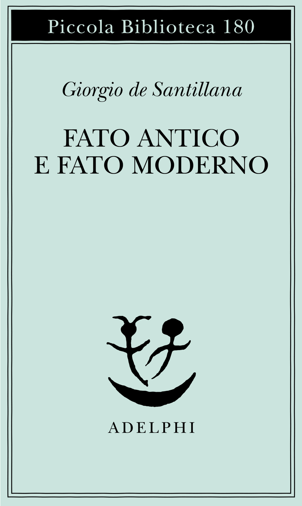

24:01 · 7 OPERE
Nell'anniversario del discorso di Solzhenitsyn ad Harvard.
Il filo del discorso
In occasione dell’anniversario del discorso di Solženicyn a Harvard, Dr Divago riprende il tema del peso politico della cultura. La riflessione distingue benessere materiale e crescita interiore e collega il venir meno della funzione educativa della società alla passività del pubblico. I richiami a Rousseau, Freud e Postman accompagnano la critica di scuola, università e intrattenimento. La figura di Peter Schlemihl e i testi di de Santillana e Anders introducono poi il problema della perdita di autonomia e della produzione dei bisogni. Il finale torna alla responsabilità etica nell’uso della tecnica e alla memoria come testimonianza personale contro l’omologazione.
I libri nel discorso

A World Split Apart (Discorso di Harvard)
Note sul riferimento
Copertina: Harper & Row · edizione bilingue russo e inglese · 1978
Immagine autentica dell’opera, controllata visivamente; l’edizione di riferimento non è attribuita al filmato.
Discorso di Harvard dell’8 giugno 1978 annunciato come oggetto del commento.

Emilio, o dell’educazione
Note sul riferimento
Copertina: Laterza · edizione di riferimento
Rousseau ed Emilio sono richiamati esplicitamente; trascrizione automatica trascrive nelle mille.

Il disagio della civiltà
Note sul riferimento
Copertina: Einaudi, 2010
Freud e Il disagio della civiltà sono annunciati.

Divertirsi da morire. Il discorso pubblico nell’era dello spettacolo
Note sul riferimento
Copertina: Luiss University Press · 2021 · prefazione di Matteo Bittanti
Immagine autentica dell’opera, controllata visivamente; non identifica l’edizione usata nel video.
Neil Postman e il titolo inglese Amusing Ourselves to Death sono pronunciati, deformati dalla trascrizione automatica.

La strana storia di Peter Schlemihl
Identificazione probabile
Note sul riferimento
Copertina: Edisco · I Liocorni · traduzione e cura di Daniela Meinardi
Immagine autentica dell’opera, controllata visivamente; l’edizione di riferimento non è attribuita al filmato.
Peter Schlemihl, Chamisso e il motivo dell’ombra permettono un’identificazione probabile del racconto.

Fato antico e Fato moderno
Note sul riferimento
Copertina: Adelphi · Piccola Biblioteca 180 · 1985
Immagine autentica dell’opera, controllata visivamente; l’edizione di riferimento non è attribuita al filmato.
Autore e titolo pronunciati prima del passaggio sull’intelligenza.
Saggi dall’esilio americano
Note sul riferimento
Copertina: Palomar · Dia-Loghi · 2003
Immagine autentica dell’opera, controllata visivamente; l’edizione di riferimento non è attribuita al filmato.
Anders e Saggi dall’esilio americano sono annunciati nel passaggio sui bisogni.